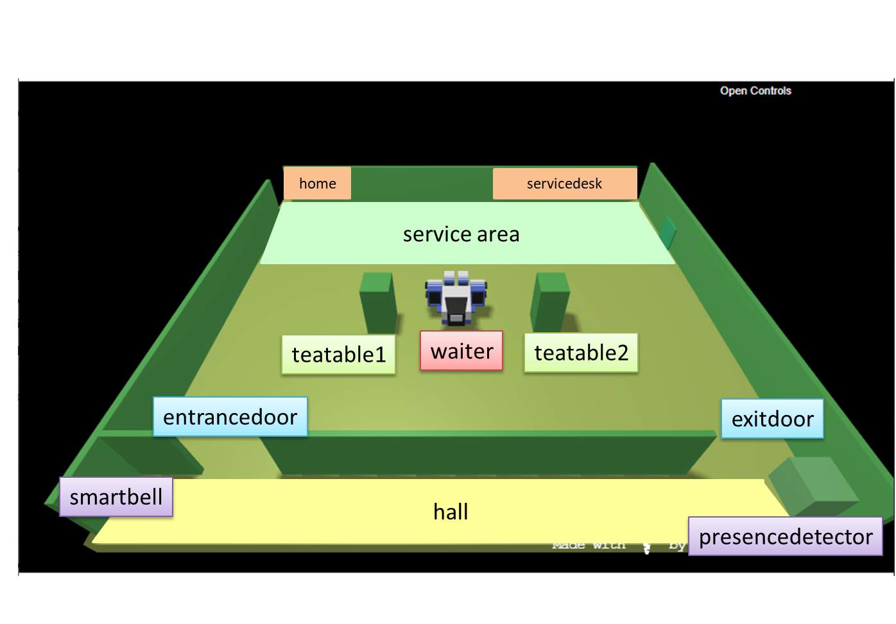

The manager of a tearoom intends to regulate the access to the service by means of a ddr robot (waiter).
The tearoom is a rectangular room that includes:
an entrancedoor to enter in the room and an exitdoor to exit form it;
a number N (N=2) of teatable;
a serviceare including a servicedesk at which works a barman;
a hall equipped with a presencedetector, i.e. a device (e.g. a sonar) that can detect the presence of
a person (or some other entity) in it.
The waiter can freely move along the borders of the tearoom, since there are no obstacles there.

User stories
As a client:
I intend to notify my interest in entering in a safe tearoom, sitting at a free teatable, ordering
some tea, consuming it (within a limited amount of time maxstaytime) paying the service
with my credit card and finally leaving the room.
For safe tearoom, I intend a tearoom with clean tea-tables posed at a proper distance; the room is populated by human clients
whose body temperature is less than 37.5 degrees.
I can submit my notification of interest by hitting the smartbell located near the entrancedoor
that will automatically measure my body temperature and send a request message to the waiter, by giving to me an unique clientidentifier.
I my body temperature is ok, but my request cannot be immediately satisfied (since the room is full), I will be informed by the waiter
aabout the maximum waiting time.
As a manager:
I intend to be able to see the current state of the tearoom by using a browser connected to a web-server
associated to the application.
Requirements
The waiter should perform the following tasks:
accept the request of a client to enter in the tearoom if there is at least one teatable in the state tablelean, i.e.
the table is free and has been properly cleaned;
inform the client about the maximum waiting time if there is no tableclean;
reach the entrance door and convoy the accepted client to the selected teatable;
take the order of the client and transmit it (using a wifi-device) to the barman;
serve the client when the barman says that the requested drink is ready;
collect the payment from the client when he/she has finished to consume or when the maxstaytime is expired;
convoy the client to the exitdoor;
clean the tea-table just freed by the client;
rest at my home when there is nothing to do.
Since the room could contain N clients at the time, the waiter should reduce as much as possible the waiting time
of the requests coming from each client.
Optional: one client in the hall
The waiter must open the exitdoor only when the hall is free, i.e. it must
not open that door if the hall is already engaged by a client waiting to enter at the entrancedoor.
Non functional requirements
The ideal work team is composed of 3 persons. Teams of 1 or 2 persons (NOT 4 or more) are also allowed.
The team must present a workplan as the result of the requirement/problem analysis,
including some significant TestPlan.
The team must present the sequence of SPRINT performed, with appropriate motivations.
The team must present (in synthetic, schematic way) the specific activity of each team-component.
Requirement Analysis
//Sistemare waitermind e waiterengine su interrompibilità di reachHome
Situazione 1: gestione di più clienti all'ingresso
Situazione 2: gestione di due tavoli contemporaneamente
Situazione 3: un cliente non viene ammesso perchè la sua temperatura è superiore a 37,5°
Situazione 4: un cliente esaurisce il maxstaytime e quindi viene richiesto
il pagamento dal waiter e viene accompagnato all'uscita
VECCHIE ASSUNZIONI
Nel sistema esistono solo due clienti, un cliente entra quando il waiter sta facendo il clean.
Il secondo cliente non interagisce.
NUOVE ASSUNZIONI
il barman prepara un ordine alla volta
i tempi di preparazione sono sempre gli stessi
il cliente suona una volta sola e aspetta il suo turno.
Problem analysis
Problema 1: Gestione delle richieste da tavoli differenti:
Il waiter ha la necessità di sapere a che tavolo portare l'ordinazione. Necessità di tenere traccia dell'importo
da pagare per ciascun cliente.
//C'è bisogno di tenere traccia di un'associazione cliente-tavolo, di una cliente-ordine-tavolo,
ovvero i barman deve sapere di chi è questo ordine e a che tavolo portarlo
Tramite prolog memorizziamo idcliente-ordine-tavolo oppure tramite scambio messaggi? (MEDIUM - Quasi fato)
Problema 2: Interruzione del clean solo se c'è un altro tavolo disponibile: nello sprint precedente abbiamo assunto
che vi fosse solo un cliente alla volta nella tearoom, quindi questo problema non si presentava.
Task clean -> diventa interrompibile se sto pulendo il tavolo e l'altro è occupato.(EZ)
Problema 3: gestire lo stato della tearoom per il manager: quali dati mostrare al manager e come immagazzinarli.
-> capire come farla, cosa salvare, come salvarla e come recuperarla. (HARD)
Problema 4: il cliente non ha ancora fatto l'ordinazione ma esaurisce il maxstaytime.
Paga euro 0 e viene accompagnato all'uscita
SVILUPPI FUTURI
Il barman potrebbe preparare due ordini insieme, presumibilmente uguali, quindi
il waiter potrebbe portare direttamente gli ordini ad entrambi i tavoli.
Opzionale: Nella hall ci può essere al più una persona
Problema 1: Se il cliente suona ma poi se ne va?
Problema 2: Se il cliente suona 400 volte?
Tenere una cassa: dove i pagamenti dei clienti si sommano e si mostra il guadagno giornaliero.
Tenere un menù con la lista dei prezzi e in base all'ordine variare la somma da pagare
TEST PLAN
Testiamo la corretta funzione delle situazioni 1,2,3 e 4. Vedi analisi requisiti.
Simuliamo più clienti che richiedono l'accesso alla tearoom e alla fine dell'esecuzione l'ingresso si deve essere
svuotato.
??Verifichiamo che venga portata a termine la catena completa degli eventi per due clienti nella tearoom contemporaneamente
Verifichiamo che se un cliente ha temperatura > 37,5° non venga accettato nella tearoom
Simuliamo un cliente che esaurisca il maxstaytime e di conseguenza verifichiamo che il waiter
richieda il pagamento e lo accompagni fuori.
Sprint review
Sprint retrospective
Paolo Verdini, Angelo Farina, Riccardo Turra
paolo.verdini@studio.unibo.it, angelo.farina@studio.unibo.it, riccardo.turra@studio.unibo.it